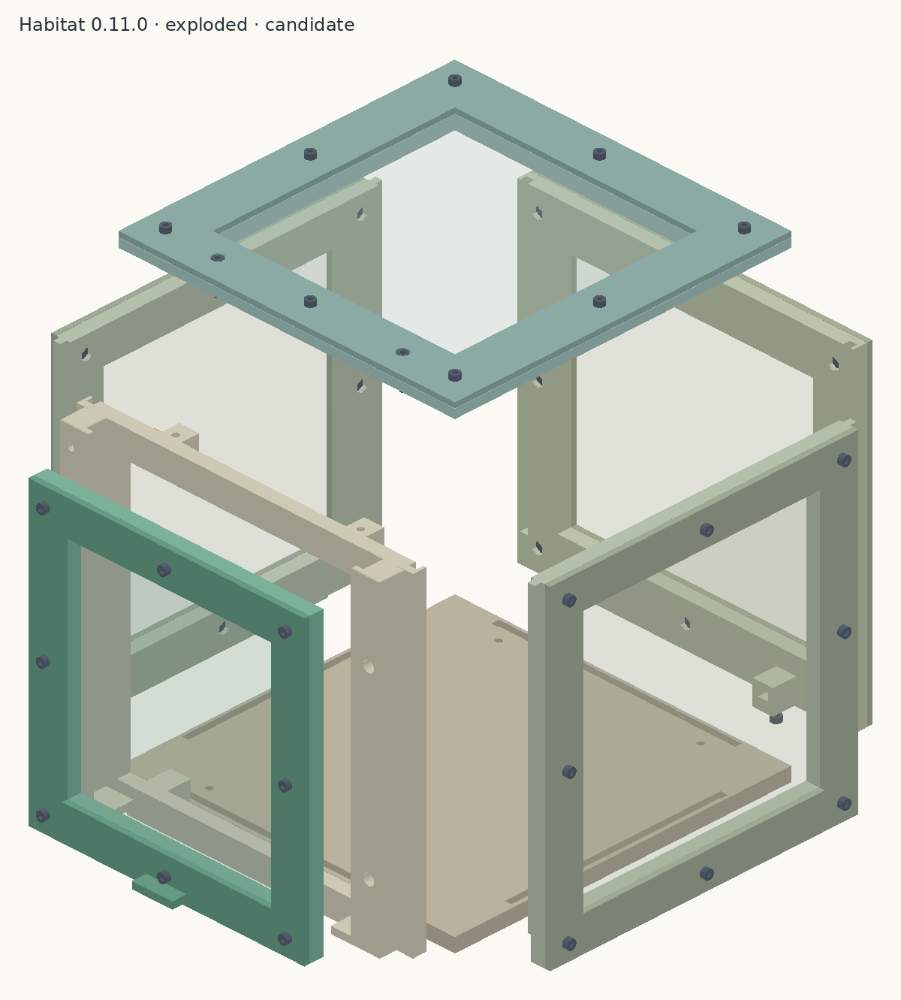
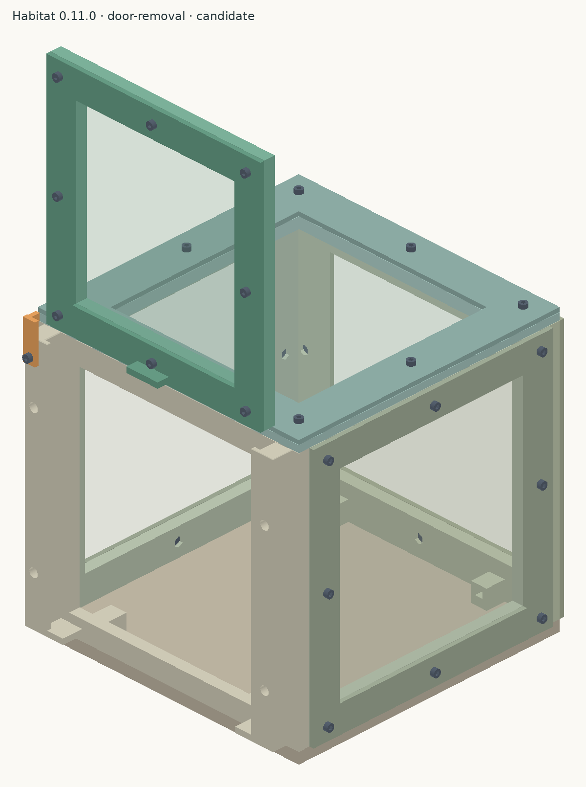
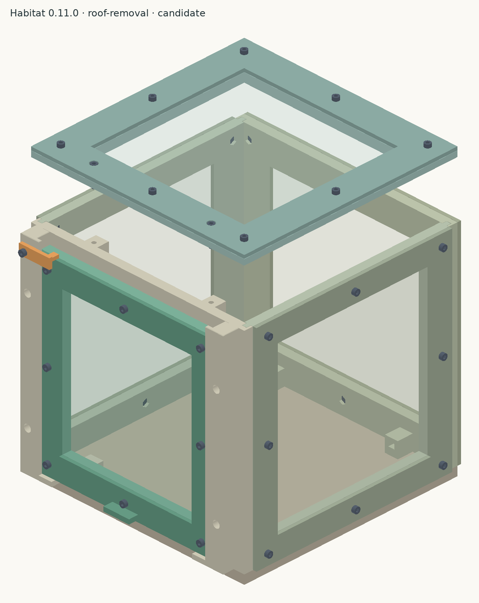

Revision 0.11 engineering candidate. Digital geometry and slicing checks pass. Physical assembly, fabric retention and 50 door cycles still need testing. The model assumes 0.20 mm compressed mesh; measure your fabric and regenerate before final printing.
Before assembly
Print and test the fit coupons first, then a complete door panel and representative corner. Remove supports and brim before checking fit. The four wall panels require the documented build-plate supports.
Identify all 15 printed parts using the part-ID key below. Use the current 0.11 fit geometry; the original unmarked parts and the engraved-ID variant share the same mating geometry.
Lay out 45 stainless M3 × 10 socket-head screws, six M3 × 16 socket-head screws, 51 M3 nyloc nuts (5.5 mm flats, 4 mm overall height), and a 2.5 mm hex driver. Screw length is measured beneath the head.
Cut five mesh sheets using the matching 1:1 templates: back 198 × 185.75 mm; left and right each 181.5 × 185.75 mm; door 162 × 168 mm; roof 198 × 198 mm. Check the printed scale. Make the eight screw openings in each sheet; only the roof also needs two larger retention-access openings.
Mesh panels → preload remaining nuts → rails and keeper → base and front/back → sides → door → roof → checks.
Part-ID key
Each letter identifies one assembly; matching frame and clamp IDs end in 1 and 2. Left and right are viewed from outside the front doorway. The future-print labeled variant has small recessed IDs. Existing unmarked 0.11 parts can be identified with this key and the paper labels; they do not need reprinting just for identification. The labeled variant preserves the original fit geometry and print orientations. Its physical fit and label legibility still need a printed check.
ID
Part
Engraved label location
A1
base
inside floor, near the back edge
B1
front frame
inside face of the lower border
B2
left rail
outer side, halfway up
B3
right rail
outer side, halfway up
B4
keeper / latch
outer face of the latch arm
C1
back frame
inside face of the upper border
C2
back clamp
outward face of the lower border
D1
left frame
inside face of the upper border
D2
left clamp
outward face of the lower border
E1
right frame
inside face of the upper border
E2
right clamp
outward face of the lower border
F1
door frame
rear face of the lower border
F2
door clamp
outward face, beside the finger grip
G1
roof frame
underside border, clear of the locating grooves
G2
roof clamp
upper face of the border
1. Prepare the five mesh panels
40 M3 × 10 screws + 40 M3 nyloc nuts
Pair each frame with its matching clamp: C1 back frame with C2 back clamp; D1 left frame with D2 left clamp; E1 right frame with E2 right clamp; F1 door frame with F2 door clamp; G1 roof frame with G2 roof clamp. B1 front frame is the open doorway and has no mesh clamp.
On each frame, put eight nuts in the hex pockets opposite the clamp face. Point each nut’s nylon end away from the clamp. Hold loose nuts with temporary tape until the screws engage.
Lay the matching mesh sheet on the frame, place the clamp over it, and insert eight 10 mm screws from the clamp side. Start all eight before tightening gradually around the border. Remove temporary tape.
Check that the fabric is held around the entire opening, the clamp stays flat and screw tips remain recessed. Set the five completed panels aside.

CAD reference view; separated parts show orientation, not an installation sequence.
2. Load the remaining nuts while the parts are accessible
11 M3 nyloc nuts
B1 front frame: insert two nuts in the lower inward-facing boss slots for the base, two in the upper inward-facing boss slots for the roof, and four in the inside-face hex pockets for the rails. Total: eight nuts.
C1 back frame: insert two nuts in the lower inward-facing boss slots for the base.
B2 left rail: insert one nut in the inside-face pocket behind the keeper pivot before mounting the rail.
Base nuts have nylon ends upward; roof nuts have nylon ends downward. Rail and keeper nuts have nylon ends toward the inside of the enclosure. Temporarily retain any loose nuts until their screws engage.
3. Attach the rails and keeper to the front frame on the bench
5 M3 × 10 screws; nuts loaded in step 2
Place B1 front frame with its outside face accessible. Put B2 left rail and B3 right rail on the outside, with their stops at the bottom and their open track ends at the top. Left and right are as viewed from outside the front.
Insert two 10 mm screws through each rail’s deep counterbores into the front frame nuts. Seat the heads; keep the running channels clear.
Attach B4 keeper / latch to the top of B2 left rail using the fifth 10 mm screw. Adjust the pivot so the keeper moves by hand and stays where placed. Swing its arm clear of the door path.
4. Fasten the front and back to the base
4 M3 × 16 screws; nuts loaded in step 2
The grooved face of A1 base goes up; the recessed screw-head pockets go underneath. Place it on two supports so you can reach the underside without turning loose walls over.
Seat B1 front frame’s bottom tongue in the front groove, with rails outside and nut bosses inside. Hold it upright and insert two 16 mm screws from below.
Seat the completed C1 back frame / C2 back clamp panel in the opposite groove, with its mesh clamp outside. Hold it upright and insert the remaining two 16 mm screws from below.
Check that both walls sit fully down and all four heads sit within their underside recesses. Remove temporary nut-retaining tape.
5. Slide in the side panels
No additional hardware
Keep the roof off. Hold the completed D1 left frame / D2 left clamp panel with its mesh clamp facing out. Align both vertical edge tongues with the open slots on the inside faces of the front and back.
Lower the panel straight down until its bottom tongue seats in the base. Repeat for the completed E1 right frame / E2 right clamp panel.
Check that all four wall tops are level. Keep the enclosure upright; the side panels can still lift out until the roof is secured.
6. Insert the door and check the keeper
Completed door panel; no additional hardware
With B4 keeper / latch swung clear, hold the completed F1 door frame / F2 door clamp panel above the rail openings. Its clamp and projecting finger grip face outward; the grip is at the bottom.
Lower both door edges into the tracks together until the door rests on both bottom stops. Do not force a tight track.
Swing the keeper across the top of the closed door so its hook prevents the door lifting. Swing it clear again and check that the door slides freely.

Insert the door and check the keeper
7. Attach the complete roof
2 M3 × 16 screws; nuts loaded in step 2
Place the completed G1 roof frame / G2 roof clamp panel with its locating grooves down and mesh clamp up. Its two larger retention-access holes go toward the front, over the two upper front-frame bosses.
Lower it onto all four wall tops. Insert one 16 mm screw through each large access hole into the front-frame nuts. These two screws seat on the roof frame.
Leave the eight short mesh screws assembled. To remove the roof later, remove only the two long retention screws and lift the entire roof assembly. Keep the enclosure upright while the roof is off.

Attach the complete roof
8. Check the completed enclosure
Physical acceptance checks
Confirm all nuts engage their nylon locking section, screw tips are recessed, the base sits flat and the mesh has no loose border or escape gaps.
With the roof installed, swing the keeper clear and raise the door through its full travel. It should lift completely out; allow about 190 mm of upward travel. Reinsert it and close the keeper.
Complete and record 50 door cycles without binding or damage. Require hand assembly without drilling or sanding. Record failed fits for correction before calling the design fit verified.